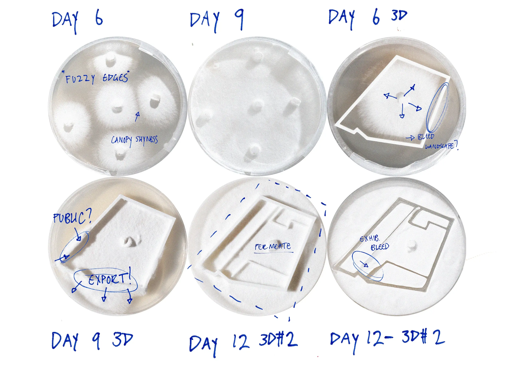
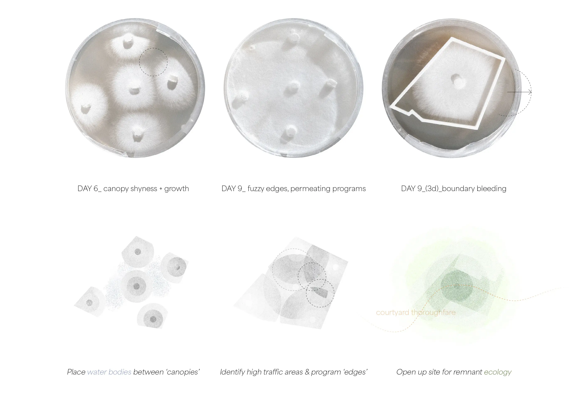
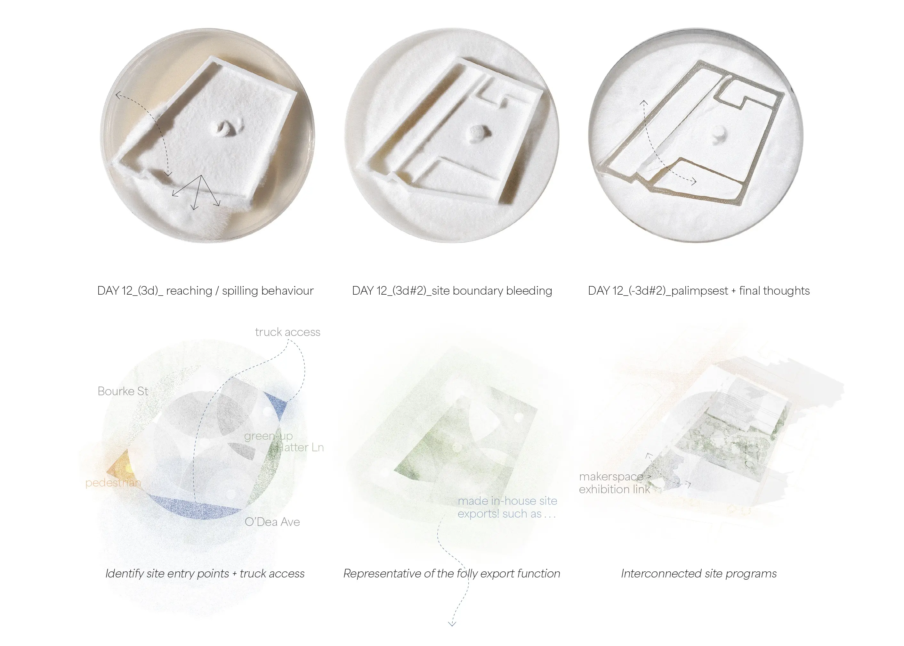
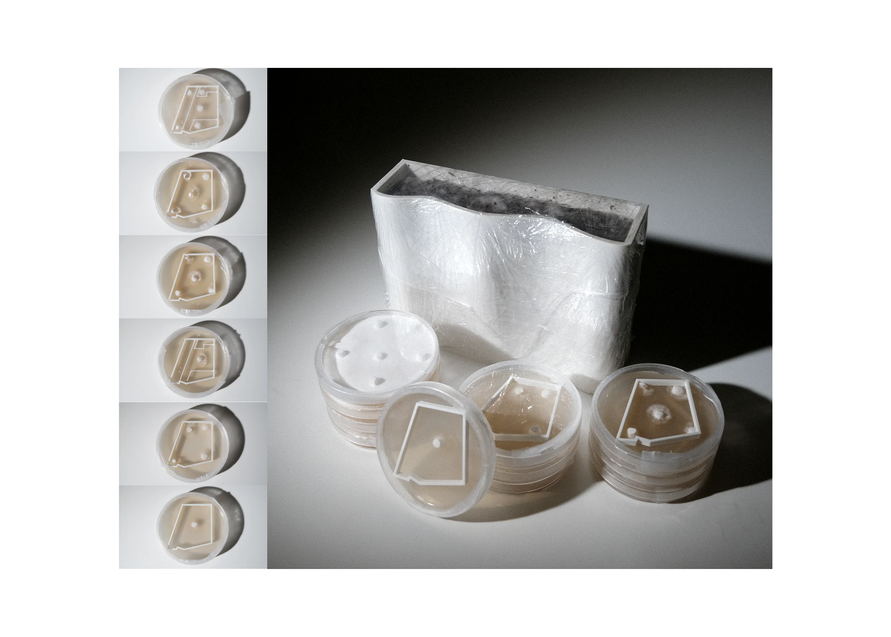
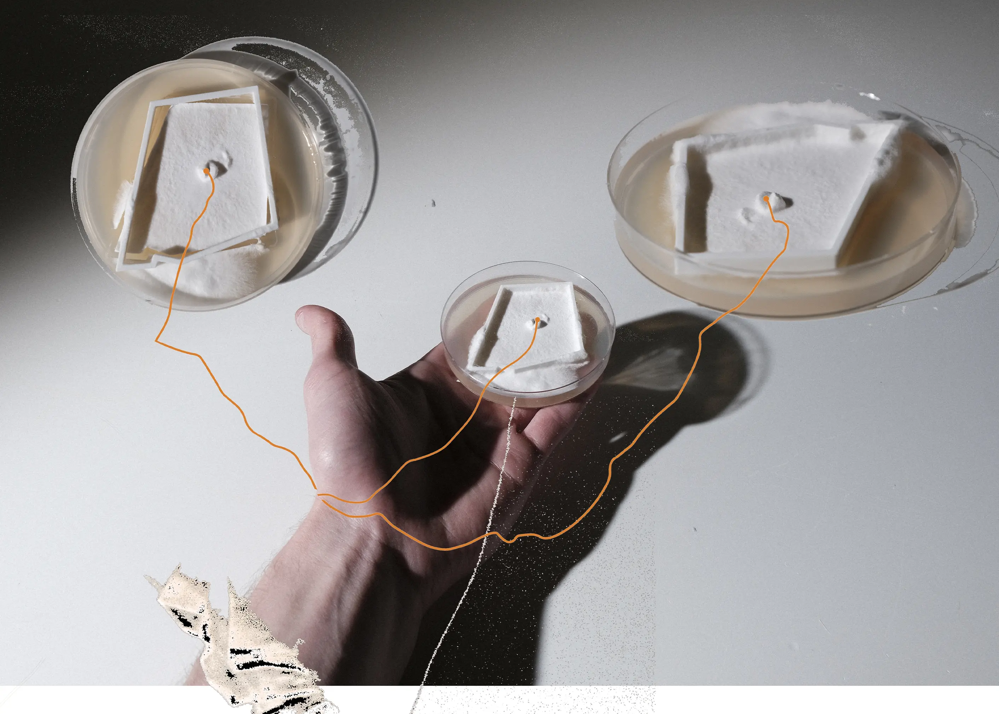
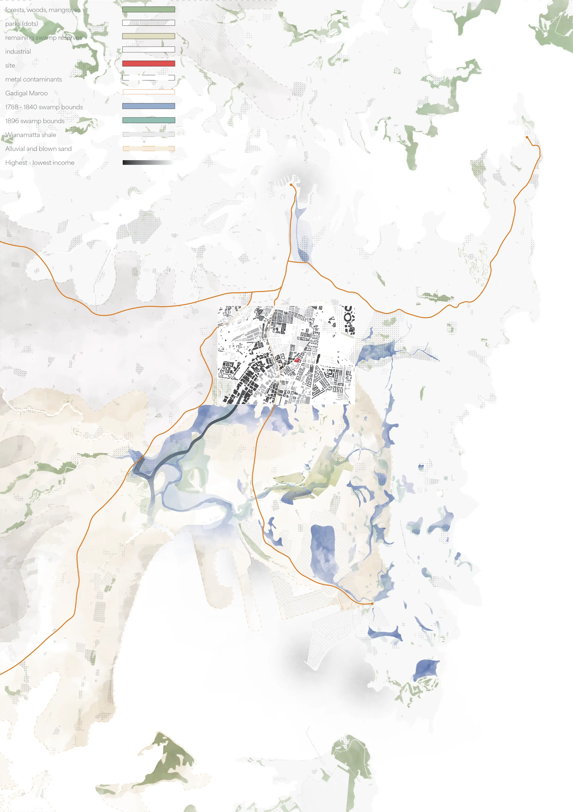
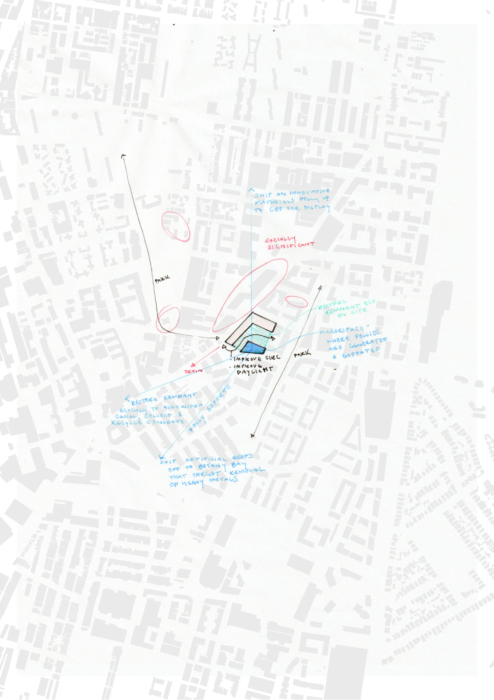

The images displayed here convey my individual contribution to the analysis & conceptual design process
of an academic group project titled the 'Waterloo Social Condenser'.
A social condenser is a term coined by Russian Constructivists to describe a building that serves as a catalyst
for social interaction and community engagement. My analytical contribution started by attending to the
Indigenous Australian conception of Country – a term used to describe a truly holistic connection to their
ancestral land, water, and sky. This was used to examine the site against the broader context of Sydney,
its pre-colonial waterways, and subsequent industrial pollution.
Two main architectural theories worked in tandem to architecturally support these points of analysis.
Muf London’s discussion of 'fuzzy edges' was used to describe the softness of a building's boundary as
an artifact and its relationship to the public domain. This concept, paired with some mycological
experimentation, is what inspired us to develop and extend our proposal as a force of remediation
beyond the immediate boundaries of the site.
The rationale for including mycelium in this process was a desire to work with Country by including a
non-human voice within the design process. Using a set of MEAG agar plates and a reishi mycelium culture,
I loosely arranged potential program locations on the site with an agar punch (day 6), curious to observe
how they would grow and interact. These experiments provided a compelling theoretical connection to the
Social Condenser, specifically the Situationist’s dérive: “a walk of unpredictable itineraries, dependent
on chance and the spontaneous subjective impulses and reactions of the wanderer.” Ultimately, the
experiment became an enjoyable point of departure for numerous ideas throughout the semester, including
potential facade systems, on-site soil & plant remediation, and served as the catalyst for the site's
environmentally oriented proposal. See the other Social Condenser projects for how these ideas were
developed further.
Location: Waterloo, NSW – Gadigal Country
Year: 2024
Tutor, Coordinator: John Cabello, Michael Ford
Institution, Studio: University of Technology, Sydney, Studio 6
Result: High Distinction, ‘Capstone Prize Commendation’
Group Members: Samuel Lloyd, Zack Heffernan